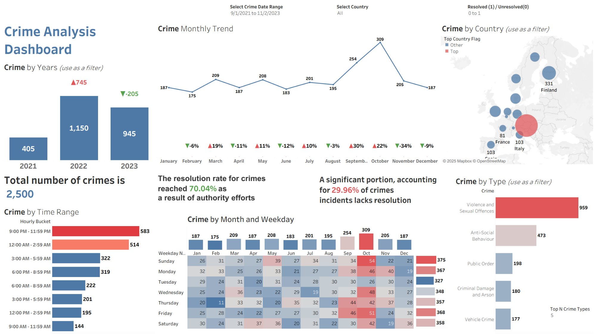

Case Studies
Selected works showcasing deep learning, data engineering, and end-to-end AI system design.

Research Automation Agentic System
Multi-agent research system on Google ADK with a contract-enforcing planner, deterministic router, and an evaluation harness that raised routing accuracy from 58% to 98% and planner compliance from 69% to 100%.

MLOps News Topic Classifier
Rebuilt an overfit prototype into a reproducible MLOps pipeline: repaired data, leak-free splits, MLflow tracking, canary releases on TF Serving, drift monitoring, and human-in-the-loop routing. Macro-F1 on unseen titles rose from 0.47 to 0.77.

AI-Powered Retail Q&A App
Production RAG service over an 848-product catalogue: hybrid pgvector and full-text search fused with RRF, an evidence gate that refuses before the LLM call, and validated citations. Hybrid hit@5 0.897, 7/7 off-topic questions refused, p95 19 ms.

Verify Before Acting
Independent acceptance rule for LLM fault diagnoses on the Tennessee Eastman benchmark. 71% of diagnoses the LLM approved itself were wrong; the rule accepted 18% with none wrong and kept conformal coverage near 90% under sensor shift.

Fairness-Aware Computer Vision
De-biasing Variational Autoencoder for facial detection on 400K+ images, narrowing the skin-tone and gender gap from about 28 to 7 percentage points while keeping accuracy above 99%.
Netflix-style AI Recommender
End-to-end AI platform combining real-time semantic search, personalized recommendations, and executive analytics on a production data stack (MySQL, Hive/EMR, S3, MongoDB, ChromaDB).

Newspaper Text Mining & Recommender
End-to-end web scraping and NLP platform that collects articles from 4 newspapers, clusters them by latent topic, and serves a live Streamlit recommender application for multi-source story discovery.

Crime Analysis Dashboard
Interactive Tableau workbook summarizing 2,500+ crime incidents across European countries (Sept 2021–Nov 2023) with temporal patterns, geographic distribution, and resolution performance metrics.

Sentiment Analysis Pipeline
End-to-end NLP pipeline classifying e-commerce customer sentiment from X (Twitter) posts using TensorFlow, Scikit-learn, and Apache Spark, with Power BI dashboards surfacing actionable brand insights.

Web Usage Mining Analytics
Apache web server log analysis pipeline extracting session statistics, referrer patterns, and frequent page co-occurrence rules using the Apriori algorithm for UX and operational intelligence.

Pattern Mining & Association Rules
Market Basket Analysis pipeline applying the Apriori algorithm to transactional retail data, generating ranked association rules by support, confidence, and lift for merchandising and cross-sell strategy.
No projects in this category yet.